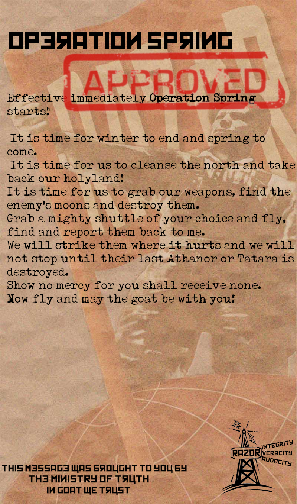
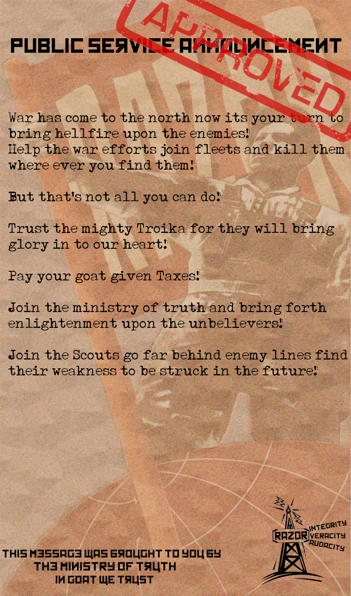
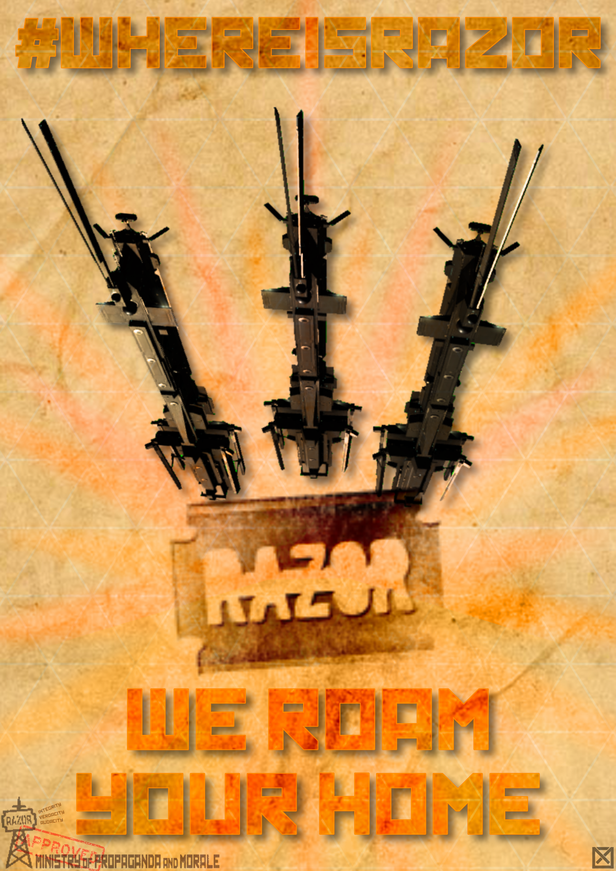
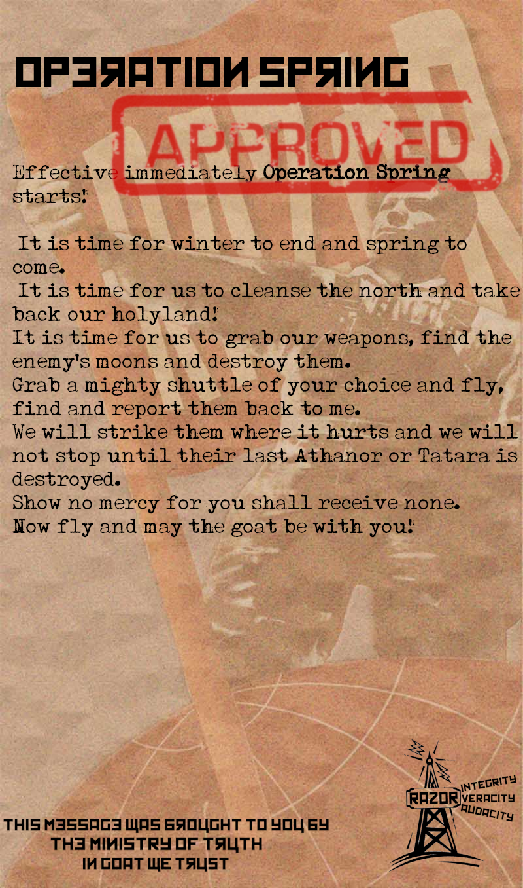
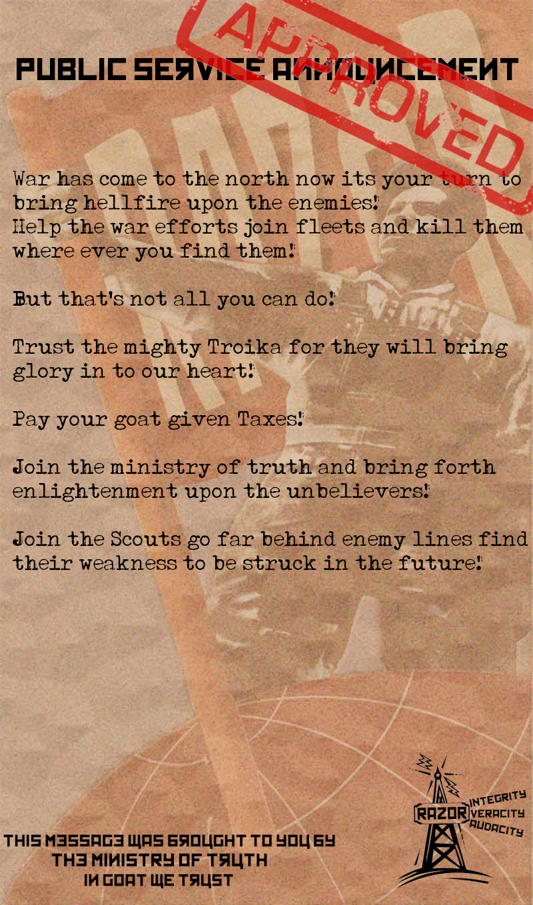
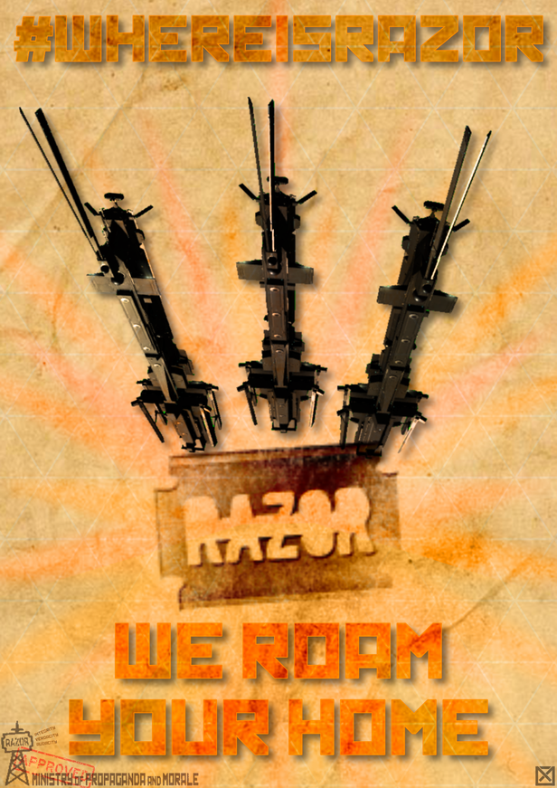
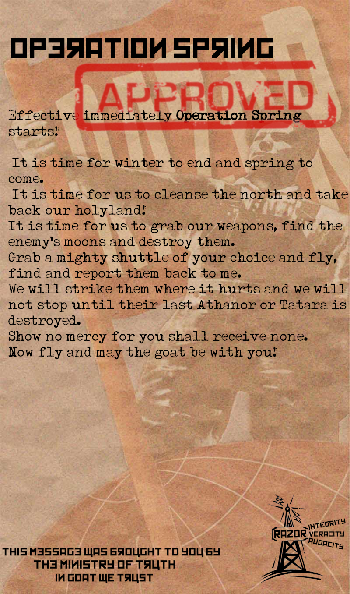
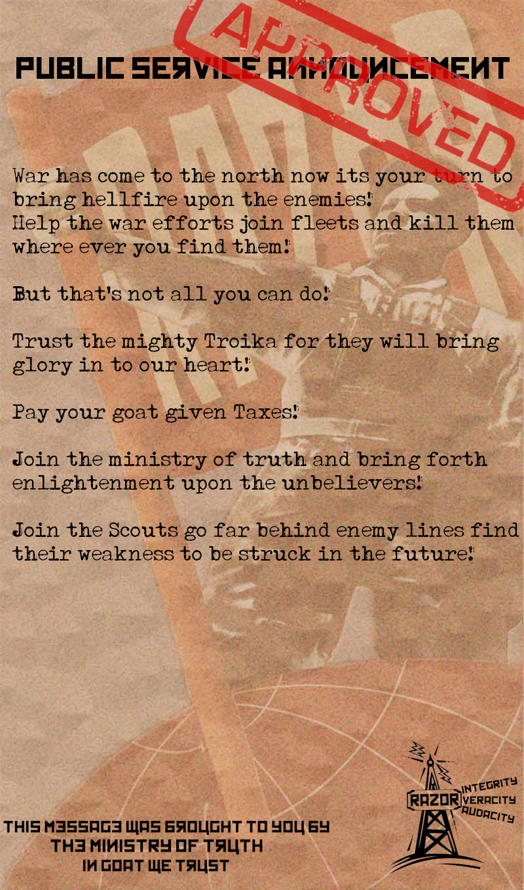
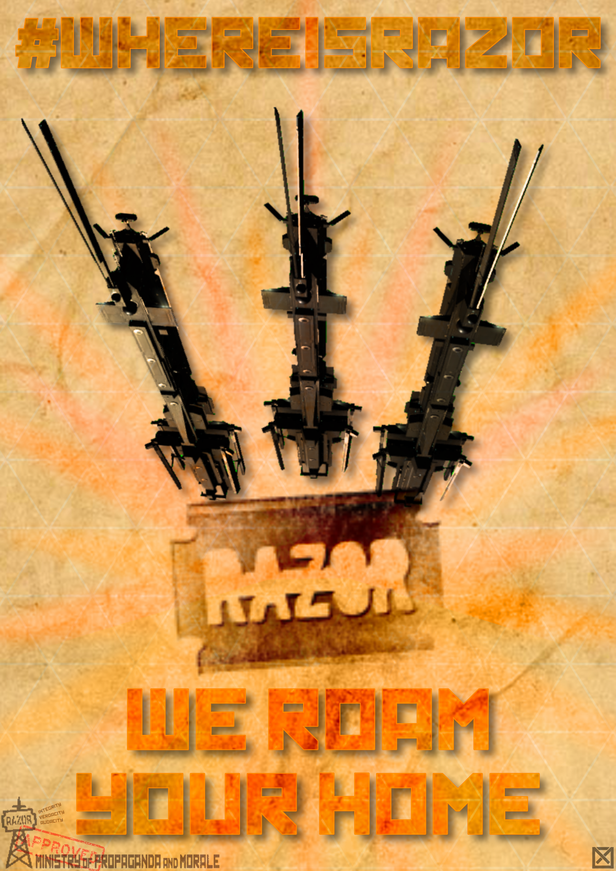

This is going to be a conglomoration of images from the propoganda side of Razor Allance, from the online game Eve Online. Who would be seeing this is those who play Eve Online
The Reason why people will come to this site to see the history of the propoganda wing of Razor Alliance. The propoganda wing is a group of people who make art in a style that is based on the 1940-50 Soviet propoganda, however it has been appropereated for the group in game.
Some of the questions that the website will be, who made the propoganda in question. As well as some of the events that the propoganda is based around. The site will be a comglomoration of images and images of text.
Things that people will do is see art based on events in Eve online. As well as the people that made all the propoganda and their history in Rrazor Alliance
information that is needed for the site to work is the entire database of images that represensents all the propoganda that has been made over the corse of 18 years that Razor has been an orginization. More information that is needed is the pictures of the people that made the propoganda.
People will come to this site because it will not be gated by a login, witch requires a linking to an Eve Online Account. Another reason that people would be visiting this site is that they would see who made the propoganda and when each peice was made.


